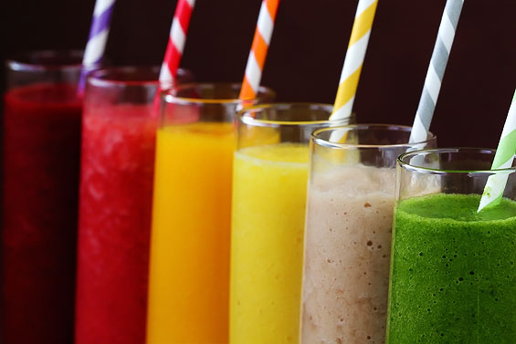

Are Smoothies Good or Bad?

In medical school, when time was shorter than short and I lived alone, I would periodically get concerned that I wasn't eating enough leafy greens, because I wasn't. Once or twice (Or maybe more, but I won't admit to it) I put about 6 cups of raw, cleaned kale tightly packed in a mixer along with a little water and nothing else and made the ultimate green smoothie. I chugged it and didn't enjoy any part of it. It was like a grassy tasting slime, or perhaps cow cud. It was what I imagined to be like a Campbell version of 1950s cod liver oil, and like a little kid, I approached it with a reluctant, yucky face. But these were times of desperation, and desperate acts were required. At least I felt more green.
It turns out that people less strange than I have also been using green smoothies. In fact, green smoothies are everywhere and drinking them is a major trend in health. I've been surprised at how many people I have met recently that have been trying to get healthy by replacing meals with green smoothies. They generally put veggies and fruit in a blender, zap it, and gulp it down. I am positive these drinks are far, far more enjoyable than the problematic recipe I had created. And intuitively, it seems like this might be a great way to get healthy. You get all the stuff in the fruit or vegetable and you get it conveniently, quickly, and enjoyably.
So should you be gulping down a smoothie every morning? I say no.
There is research to show that if you take exactly the same energy as a liquid instead of a solid, you will consume more calories later because the liquefied energy doesn't satisfy your appetite as well as the solid food[1]. In addition, you may be changing the rate and effect of nutrient digestion in important ways. We know that for some food, like rice, if you mechanically turn it into a slurry prior to consuming it, your body reacts with a significantly sharper and faster spike in blood sugar. Lastly, people who consume green smoothies usually use fruit to make it taste palatable. The energy density of the fruit dwarfs the energy density of the greens and these smoothies usually end up being quite high in sugar.
Here is what a 'healthy' green smoothie might contain:
This concoction contains 218 calories. Even though it may feel like a 'green' smoothie with all those leaves in the blender, only about 6% of the calories come from the spinach. The rest is all fruit, with a total of 32 grams of sugar. 59% of the total calories in this smoothie come from sugar.
Now consider that by consuming this in the liquid form you may be less satisfied, less full, and subsequently eat more calories during the day than you otherwise would have if you ate those ingredients as solid foods. Also consider that by taking those foods as liquids instead of solids you may be significantly changing the immediate blood sugar spike and subsequent blood sugar fall you experience (in a bad way).
Considering these factors, I am particularly worried about the hidden harms of regular smoothie consumption on people who are trying to lose body mass, have diabetes, or have high triglycerides.
Do I hate all smoothies all the time? Of course not. I know green smoothie consumers who put all the vegetables or fruits they eat for their entire day into the smoothie. Without the smoothie, they likely won't consume any fruits or vegetables. Replacing the smoothie with a fast food egg and bacon sandwich is a dubious proposition, so I don't always push hard to get rid of the smoothies.
But the bottom line is this: Use your mouth and your teeth the way nature intended and put the smoothies aside or have them just as treats. Compared to my medical school days, my life is now better in many ways, and I no longer imbibe the gross, green smoothie of old. I strive to eat and chew generous portions of dark green leaves every day, and thus hope the desperate times do not return. I recommend you do the same.
Credits to: nutritionstudies